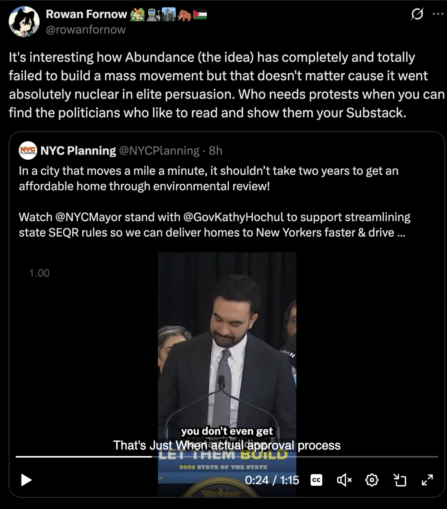

Summary
- More women lol. This is to ensure that more people don't immediately dismiss us as a male-centric group and to implicitly promote diversity of thought.- More connectivity across other clubs/orgs on clubs that have similar values.
- Bootcamp esque program akin to CompBio @ Berkeley's; guranteed spot in a project the next semester is a great incentive for freshman/sophomores.
Lakshya Jain
We had Lakshya Jain over and I wanted to impassionately list some of my own takeaways and the suggestions he gave. I think my first takeaway is that organizing events isn’t actually that hard. It’s everything that comes after that’s even more difficult to get a hang of. How do you know an event went well? Vibes? The amount of women that came? I’m not too sure, but I still have a poor sense of when an event went well.Anyway, I think the event went okay… I guess. We should do a better job of advertising (mostly on Instagram, listservs, and “guerrilla” marketing techniques). Ed Stem, Discord, and Slack servers are pretty easy to deal with.
Okay wait, here's an idea dump for events: AI event w/ Kelsey Piper + maybe some other lawyer (???), event about the CA Insurance Commissioner (ask Stavros for advice + Patrick Wolff(???)), bio event w/ Adam + one other person w/ CompBio (alr in the works), and maybe we should do a healthcare event.
I’m participating in Justin’s (from Stanford Abundance) policy hackathon thing there, so maybe I’ll get a couple of ideas for a healthcare event. Apart from that sort of programming, I do think we need to grow in more substantial ways.
Lakshya, after the event, emphasized getting more women on board since they signaled social/safe vibes to (1) other women and (2) other men. I think people like diversity of thought and, conditional on there being gender diversity, you’ll have a lot more of that than if you didn’t have diversity in that particular metric. I’m not too sure how we do that. Anyway, DUMP OVER.
Elite Persuasion
This is the view I have, but I would like to expound on it. I want more students and young people to have better (and more optimistic) policy views and attitudes. A lot people within the organization (namely, Victoria) think otherwise and want more mass-movement vibes, but I think a suitable combination of the two can be created.I can't find the tweet now, but the poster made the distintcion between "diagnosis" and "policy". Lots of diagnoses of American's current qualms feel very appealing from the populist side e.g. young people not being able to buy a home, but a lot of policy prescriptions that are much more elite e.g. upzoning. ƒ
